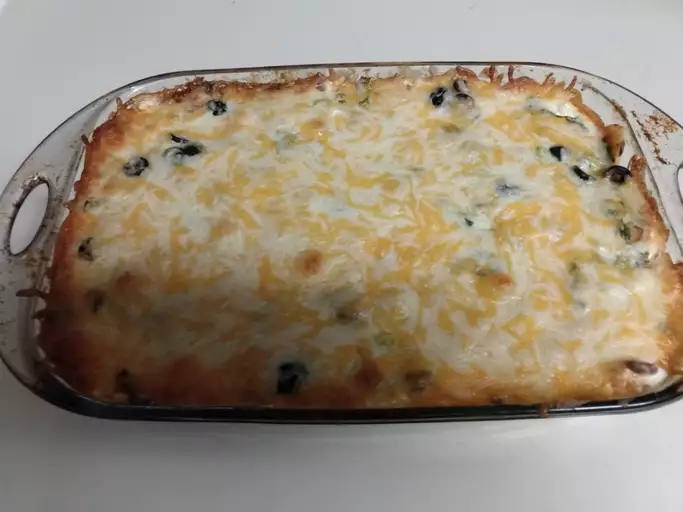

Taco Casserole
An Easy Taco Dish To Please The Whole Family
Ingredients:
- 1 pound lean ground beef
- 2 cups salsa
- 1 (16 ounce) can chili beans, drained
- 3 cups tortilla chips, crushed
- 2 cups sour cream
- 1 (2 ounce) can sliced black olives, drained
- ½ cup chopped green onion
- ½ cup chopped fresh tomato
- 2 cups shredded Cheddar cheese
Directions:
- Preheat the oven to 350 degrees F (175 degrees C). Spray a 9x13-baking dish with cooking spray.
- Heat a large skillet over medium-high heat. Cook and stir ground beef in the hot skillet until browned
and crumbly, 8 to 10 minutes.
- Stir in salsa, reduce heat, and simmer until liquid is absorbed, about 20 minutes. Stir in beans; cook
until heated through.
- Spread crushed tortilla chips over the bottom of the baking dish; spoon beef mixture on top. Spread
sour cream over beef, then sprinkle olives, green onion, and tomatoes on top. Cover with Cheddar cheese.
- Bake in the preheated oven until hot and bubbly, about 30 minutes.